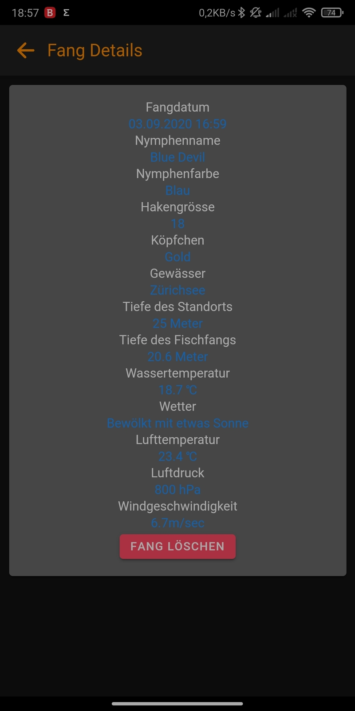

Die Fischerei auf Felchen ist eine Grosse Wissenschaft, ich kenne viele Fischerkollegen/Innen
die beim Angeln auf Felchen sich diverse Notizen machen wie z.B. Haken Grösse,
Temperatur, Wassertemperatur, Nymphen Farbe, Wetter usw.
Die Idee zum Projekt entstand in meiner Ausbildung zum Applikationsentwickler.
Unsere Aufgabe war es eine Mobil App zu Entwickeln mit ReactNative.
In der Schule hatten wir nicht sehr viel Zeit für dieses Projekt, dennoch wurde das Projekt fertig
und ich war ziemlich zufrieden. Was mich aber störte war das für das Backend der Applikation Firebase
eingesetzt wurde. Zudem war die App eigentlich für mich, also eine Person.
Nach meiner Ausbildung hat mich das Projekt nochmals gepackt und ich habe die komplette App mit Ionic
umgeschrieben, ein eigenes Backend programmiert sowie eine Login Funktion implementiert.
Beschreibung:
Mit dieser App sollen gefangene Felchen gespeichert werden.
Die Felchen Fischerei ist eine Grosse Wissenschaft. Es wird mit diversen Nymphen geangelt,
diese unterscheiden sich in Farbe, Hacken Grösse und anderen Merkmalen.
Mit der App sollen all diese Eigenschaften gespeichert werden, um auf die Daten der Fänge zurück greifen zu
können.
Funktionen:
Wird die App gestartet und hat man sich mit seiner E-Mail Adresse
und Passwort erfolgreich angemeldet kommt man auf den Statistik Screen
Im Screen werden alle Fänge, die man gespeichert hat nach Datum geladen
Mit Klick auf Details zum Fang gelangt man zum Detail Screen mit allen gespeicherten Daten des Fanges

Im Detail Screen sieht der Benutzer alle Details, die zum Fang gespeichert wurden.
Der Benutzer kann hier auch einen Fang wieder löschen
Klick der Benutzer in der Statistik auf Fang hinzufügen wird ein neuer Screen geöffnet, um einen neuen Fang einzutragen
Der Benutzer kann hier die gewünschten Daten eintragen. Die Wetterdaten werden automatisch über eine API abgefragt
Die Wetterdaten können auch manuell noch angepasst werden.
Das Wetter lässt sich über den Tab Wetter laden. Der Benutzer kann die Wetterdaten automatisch per GPS laden oder per PLZ oder Ort
Die Wetterdaten werden direkt über eine API angefragt und verarbeitet
Die Hintergründe wechseln sich je nach Wetter oder Urzeit
Im Tab Einstellungen kann der Benutzer seine Angaben wie Name oder E-Mail-Adresse ändern
Es besteht die Möglichkeit sich auszuloggen, das Passwort zu ändern oder den Account komplett zu löschen
Vorgesehene Features:
Bei Gelegenheit und genügend User, welche die App benützen sind folgende Features noch vorgesehen:
Öffentliche Fänge anderer User der App
Fang bearbeiten
Fänge sortieren
Verwendete Technologien:
Ionic
ASP.NET
MSSQL
Umsetzung:
Die App wurde mit Ionic programmiert.
Für das Backend wurde eine RESTFull API in ASP.NET in C# programmiert
Die App kommuniziert über das HTTP Protokoll mit der RESTFull API
Als Datenbank wurde eine Microsoft SQL-Datenbank eingesetzt